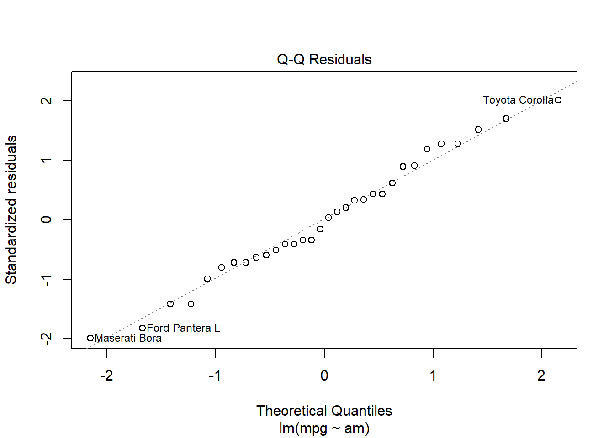
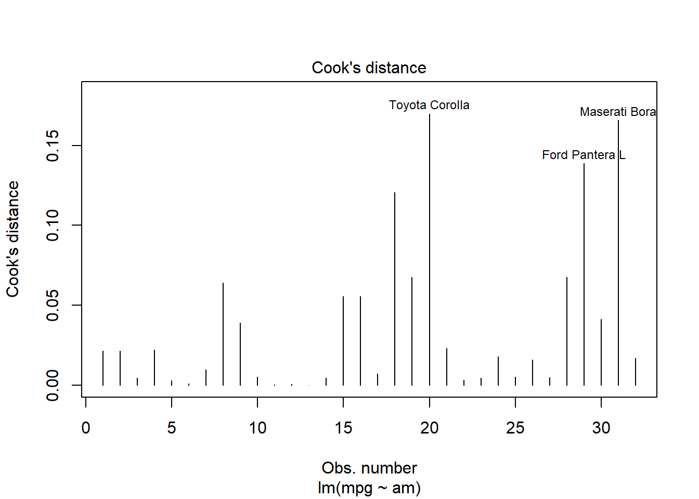

Current draft aims to very concisely introduce researchers to R.
Our target audience is primarily the research community at VUB / UZ Brussel, those who have some basic experience in R and could use a refresher.
We invite you to help improve this document by sending us feedback: wilfried.cools@vub.be
Key Message
Learning R will reward the researcher with the ability to read, manipulate, summarize and visualize data with tremendous flexibility, for free, anywhere and anytime.
R gives access to an enormous range of statistical techniques made available through R packages, with a huge R community online to help out.
The open source programming language R is more than just statistics; packages support reproducible research (eg., markdown/quarto), web apps (eg., shiny), databases (eg., SQL), interaction with other programming languages (eg., Python), cloud computing and more.
Compiled Oct 11, 2023 (R 4.3.1)
Exemplary Analysis
Before going into any detail, a simple analysis will show you where you are heading towards.
Let’s use a dataset that is included into R, the mtcars.
Determine all available data with data( ).
The first 6 lines of the dataset is shown to give an idea about the variables.
A regression analysis of mpg (dependent variable) on am (independent variable) is performed with lm( ) function (linear model).
am is treated as a factor with two levels “0” and “1” (see later) or numeric with values 0 and 1, which makes no difference with only two values.
The result is assigned to the R object myResult.
myResult <-lm(mpg~am,data=mtcars)
To show the result, request the R object.
Note: an assignment of regression output to an R object (referred to with its name) does not show by itself.
There is a lot more inside the object that can be extracted.
To request a summary, use the summary() function on the R object.
summary(myResult)
Call:
lm(formula = mpg ~ am, data = mtcars)
Residuals:
Min 1Q Median 3Q Max
-9.3923 -3.0923 -0.2974 3.2439 9.5077
Coefficients:
Estimate Std. Error t value Pr(>|t|)
(Intercept) 17.147 1.125 15.247 1.13e-15 ***
am 7.245 1.764 4.106 0.000285 ***
---
Signif. codes: 0 '***' 0.001 '**' 0.01 '*' 0.05 '.' 0.1 ' ' 1
Residual standard error: 4.902 on 30 degrees of freedom
Multiple R-squared: 0.3598, Adjusted R-squared: 0.3385
F-statistic: 16.86 on 1 and 30 DF, p-value: 0.000285
For a regression output type of object, the plot( ) function offers specific visualizations.
A possible way to request one of them is by using their index.
The qqplot (2) and the influence measured by Cook’s distance (4) are shown.
plot(myResult,2)

plot(myResult,4)

For a regression output type of object, much more information is available, try str(myResult) and you’ll see.
Extract, for example, the R-squared of explained variance:
summary(myResult)$r.squared
[1] 0.3597989
In this case, with a continuous dependent variable and a categorical independent, an equivalent analysis would be ANOVA which can be performed with the aov() function in which the am is automatically treated as a factor.
Let’s perform the anova and extract it’s summary.
The t-value when squared gives an F-value, so you can verify, both the ANOVA and regression offer exactly the same evidence for group differences in mpg for am equal to 0 or 1.
summary(aov(mpg~am,data=mtcars))
Df Sum Sq Mean Sq F value Pr(>F)
am 1 405.2 405.2 16.86 0.000285 ***
Residuals 30 720.9 24.0
---
Signif. codes: 0 '***' 0.001 '**' 0.01 '*' 0.05 '.' 0.1 ' ' 1
Using R
R commands can be entered in the R console for its interpretation (=running R commands).
Enter commands after the prompt, typically > to start and + to proceed.
Push enter to make R interpret your command. ESC to exit a command.
Push Arrow Up (Down) to request previous (next) command. The function history() shows earlier commands.
Push Tab to complete the name of an R object if uniquely identifiable. Tab again to list possible names of R object if not uniquely identifiable.
R scripts combine commands for current and future use, they can be flushed to the R console (=creating a program with R commands).
from the script window in RGui (basic, find Rgui.exe in the folder with binary files, maybe R/R-x.x.x/bin/x64 or R/R-x.x.x/bin/i386)
from source code editors, eg., Notepad++ (general purpose)
integrated development environments: eg., RStudio (standard / recommended)
R workspace
An R workspace is a working environment for a user to interact with, that includes all R objects a user makes or imports. An R workspace has the extension .RData (or .rdta).
An R workspace is linked to a directory on your system, the working directory, for its input and output. This is the folder in which your .RData is stored.
Retrieve the working directory:
getwd()
Check what is in that working directory already:
dir()
Set a working directory by its directory path, use forward slashes (or double backward \\ because \ is an escape character):
setwd('C:/Users/.../Documents/')
A workspace can import files from (the working) directory:
R workspace with its R objects using load()
eg., load(mydta.RData)
R code with variables and/or functions to execute using source()
eg., source('myprog.r')
R functions from installed R packages using library() or require()
eg., library(tidyverse)
data from text or other files (see below)
eg., read_table(file='myfile.txt',sep='\t')
An R workspace offers over 1000 functions and operators combined into the package base.
Additional dedicated functions are included by loading in appropriate additional packages when necessary (see library( )).
To include all functions related to the tidyverse package, at least once install the packages of interest, and occasionally update them:
install.packages('tidyverse')
Every time a workspace is opened, all relevant packages should be included
Check all installed packages
by default includes all locations given by .libPaths()
library()
To get help on how to use functions, eg., read.delim( ),
call them with ?read_delim.
To get help on how to use packages, eg., tidyr,
call help(package='tidyr').
R objects
An R workspace contains R objects which can be data as well as methods and functions. Each object is of a certain class which defines the object and how it is handled.
Check the objects currently in your workspace:
ls()
[1] "has_annotations" "myResult" "params"
Check the class of an object,
in this case a dataframe:
class(mtcars)
[1] "data.frame"
Check the class of an object,
in this case a regression result or lm-object:
class(myResult)
[1] "lm"
Check the class of an object,
in this case a function or function-object:
class(plot)
[1] "function"
Objects are defined by various attributes and methods.
The str() function (structure) is very very convenient, just to make sure what the object is, see its content, and structure.
Check the structure of an object,
in this case a dataframe and function:
Once established, the R object can be used by any function able to deal with that type of object, in this case a string.
setwd(myDirPath)
An R object can be removed, which is especially of interest when it uses a lot of memory.
rm(myDirPath)
A few R objects are created to exemplify.
To show the result of an assignment is should either be called explicitly, or the assignment should be made in brackets.
Typically data are stored as a dataframe in R, which is a list of equally sized vectors. A vector is a combination of elements of a particular type. Note: different types can not co-exist in a vector.
Dataframes are similar to matrices, but more flexible because each vector can be of a different type. Roughly speaking, the first column could be characters, the second numbers, the third booleans, … all of the same size.
An exemplary dataframe is created from vectors of size 4:
'data.frame': 4 obs. of 3 variables:
$ c: chr "a" "b" "a" "a"
$ f: chr "1.2" ">5" NA "0.2"
$ g: chr "TRUE" "FALSE" "true" "?"
Extract the vector from a dataframe, using the $ operator and a name, the list selector [[ ]] with either a name or a number for the position.
A vector named ‘a’ is selected using the $, or as an element within the list, or the first element, or the first column treating it as a matrix, of the column named ‘a’ treating it as a matrix.
mydataframe$a
[1] 1 2 3 4
mydataframe[['a']]
[1] 1 2 3 4
mydataframe[[1]]
[1] 1 2 3 4
mydataframe[,1]
[1] 1 2 3 4
mydataframe[,'a']
[1] 1 2 3 4
The class is now of type vector, in this case numeric:
class(mydataframe$a)
[1] "integer"
Extract a row from a dataframe, using either the row name or a number of the position.
Instead of tabs as separator (sep=‘), other symbols can be used, like comma’s (sep=’,’). For other options consult the help file:
?read.table
Packages with dedicated read-and-write functions, like the foreign package, provide more functions for reading in data from SAS, Stata, SPSS, and more.
Let’s load in functions, consult the help file and read an SPSS file.
The tidyverse ecosystem includes the readr package, for reading in data. Check out the arguments with ?read_delim.
Different types of files can be read in with different delimiters.
Note that also a copy-paste is possible, an example in readr is included
# library(readr) # or tidyversemydtaCsv <-read_delim('_dta/RealData_clean.csv',delim=';')mydtaTxt <-read_delim('_dta/RealData_clean.txt',delim='\t')mydtaClp <-read_delim(clipboard(),delim='\t')
Excel is notoriously error prone but popular. A package dedicated to reading in data from Excel is readxl.
library(readxl)# read xlsx file and assign it to mydtaXls objectmydtaXls <-read_excel("_dta/RealData_clean.xlsx",sheet="datafile")class(mydtaXls) # consult class of mydtaXls object
[1] "tbl_df" "tbl" "data.frame"
For each function, many arguments are possible.
More complex and versatile tools exist, also for XML, relational databases, unstructured data, …
Data types and structures in R
Dataframes are lists of vectors with a particular type that should be assigned appropriately.
From the mydtaXls file the 5th to 16th row is selected (before the comma in brackets), for the columns 1 to 3, 6, 7, 10 and 11 (after the comma in brackets).
# A tibble: 10 × 7
Pte Dx P Size mm (FMT,VZ, QRT…¹ `FMT (mm)` `Measurement in endom`
<chr> <chr> <dbl> <chr> <dbl> <chr>
1 1 TB 3 VZ 24 (vierling) NA Y
2 2 TB 1 FMT 13 13 Y/N
3 3 FLIN 1 VZ 23 NA Y
4 6 TB 3 FMT 6 6 N
5 8 TB 2 FMT 8 8 Y
6 10 TB 4 VZ 45 NA Y
7 186 PRR 1 infected heterotopic … NA ?
8 186 non… <NA> NA <NA> NA <NA>
9 PUL evol <NA> NA <NA> NA <NA>
10 1 PRR NA 0 NA ?
# ℹ abbreviated name: ¹`Size mm (FMT,VZ, QRT)`
# ℹ 1 more variable: CL <chr>
The extremely useful str() function extracts the structure of the R object. Use it!!
str(dta)
tibble [10 × 7] (S3: tbl_df/tbl/data.frame)
$ Pte : chr [1:10] "1" "2" "3" "6" ...
$ Dx : chr [1:10] "TB" "TB" "FLIN" "TB" ...
$ P : num [1:10] 3 1 1 3 2 4 1 NA NA NA
$ Size mm (FMT,VZ, QRT): chr [1:10] "VZ 24 (vierling)" "FMT 13" "VZ 23" "FMT 6" ...
$ FMT (mm) : num [1:10] NA 13 NA 6 8 NA NA NA NA NA
$ Measurement in endom : chr [1:10] "Y" "Y/N" "Y" "N" ...
$ CL : chr [1:10] "?" "?" "1" "?" ...
The classes in this case are tbl_df, tbl, data.frame. When tidyverse is loaded, dataframes are automatically assigned the extra class tbl_df and tbl with extra functionality (see future).
In the example the numeric P is reduced by 2, and then turned into a factor.
The Dx variable which is of type character is made a factor, which has levels.
The CL variable is made an ordered factor, with levels ‘yes’, ‘maybe’ and ‘no’ using the data 1, ? and 0.
The CL variable which is now a factor is turned into a numeric again, first making it a character vector (tricky issue: is to avoid obtaining the level ranks) and then making it a number.
The FMT (mm) variable is then assigned to the not yet existing fmt variable. Notice the `, these quotes are required because the variable name contains a space. Finally, theFMT (mm)` is removed, simply by assigning it the NULL value.
tibble [10 × 6] (S3: tbl_df/tbl/data.frame)
$ P : Factor w/ 4 levels "-1","0","1","2": 3 1 1 3 2 4 1 NA NA NA
$ Dx : Factor w/ 3 levels "FLIN","PRR","TB": 3 3 1 3 3 3 2 NA NA 2
$ newCL: Ord.factor w/ 3 levels "yes"<"maybe"<..: NA NA NA NA NA NA NA NA NA NA
..- attr(*, "names")= chr [1:10] "CL" "CL" "CL" "CL" ...
$ CL : Factor w/ 2 levels "1","0": NA NA NA NA NA NA NA NA NA NA
..- attr(*, "names")= chr [1:10] "CL" "CL" "CL" "CL" ...
$ numCL: num [1:10] NA NA NA NA NA NA NA NA NA NA
$ fmt : num [1:10] NA 13 NA 6 8 NA NA NA NA NA
ADVICE: first always check structure, change where necessary
Applying functions
Functions consist of code that you can execute, to process your data for example. Technically, R functions are also R objects.
A few simple functions are summary() and table():
summary(dta$P)
-1 0 1 2 NA's
3 1 2 1 3
summary(as.numeric(dta$P))
Min. 1st Qu. Median Mean 3rd Qu. Max. NA's
1.000 1.000 2.000 2.143 3.000 4.000 3
summary(as.numeric(as.character(dta$P)))
Min. 1st Qu. Median Mean 3rd Qu. Max. NA's
-1.0000 -1.0000 0.0000 0.1429 1.0000 2.0000 3
table(dta$P,useNA='always')
-1 0 1 2 <NA>
3 1 2 1 3
table(as.numeric(dta$P),useNA='always')
1 2 3 4 <NA>
3 1 2 1 3
A summary taken from a factor offers a frequency table.
A summary of a factor that is converted to numeric offers a few statistics (extrema, mean, …) calculated on the level ranks. This is probably not what is intended.
A summary of a factor that is converted first to a character, then to numeric will correctly offer the statistics of the actual values.
A table would offer a frequency table. Always be cautious when working with factors, they behave in sometimes complex ways.
ADVICE: first always check summaries and tables, change where necessary in order to detect anomalies
Almost all statistical analyses in R will use functions others created for you to execute on your data. Examples have been the lm(), aov(), and plot().
Creating functions
Instead of using existing functions, it is possible to create your own. For simple data analysis this is rarely necessary but some basic understanding will probably help you understand how to use functions better.
A function in R has the structure function(arglist) {body}.
The body contains a set of instructions that are executed each time the function is called. The list of arguments bring in the information required for the function to execute.
A function that returns a random standard normal value could be:
It is possible to execute code conditionally. For simple data analysis this is rarely necessary but some basic understanding will probably help you understand other researcher’s code.
Execute code dependent on a condition being true:
if(rnorm(1)>0){ cat('the generated value was above 0\n') }
Execute code dependent on a condition being true and other code when false:
ifelse(rnorm(1)>0,'above','below')
[1] "below"
Execute code multiple times, using an indicator variable:
for(it in1:10){if(rnorm(1)>0){ cat('for it equal to', it,'the generated value was above 0\n' ) }}
for it equal to 1 the generated value was above 0
for it equal to 2 the generated value was above 0
for it equal to 3 the generated value was above 0
for it equal to 4 the generated value was above 0
for it equal to 5 the generated value was above 0
for it equal to 7 the generated value was above 0
for it equal to 8 the generated value was above 0
Execute a code as long as a condition holds:
it <-3while(it >0){cat('it =',it,'\n') it <- it-1}
it = 3
it = 2
it = 1
Still other control structures exist.
R help files
The ? should give basic information on functions and how to use them.
To open the R help file, use the ? operator and the name of the function without brackets.
?paste
A help file in R consists of:
reference to package it belongs to (eg., base, which is always loaded automatically)
description
usage with required arguments and their default value if any
arguments with additional information on the arguments
details that could be of interest
value with information on the result
references for further information
see also for highlighting similar, or related functions
examples to show its use
From the help file for paste():
paste works on r objects that can be converted to character
a separator is put in between, by default a single space.
these values by default are not collapsed
For example, with a first object a numeric vector of 4 elements and a second object a character vector of 2 elements.
Either use the default separator, a dash, and maybe collapse using a slash.